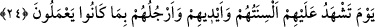
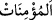

ifâde etmektedir. et-Ta‘rîfât’ta şöyle der: “Bir şeyden gafil olmak, o şeyi asla hatıra
getirmemektir.”
“ vâciblerden ve mahzurlu şeylerden inanılması gereken her şeye hakîkî ve
tafsîlî bir îmanla muttasıf olan demektir. Nitekim îman vasfı asıl olduğu halde önceki
sıfatlardan geride bırakılması bunu bildirmektedir.
Âyette anlatılan Âişe Sıddîka (r.anha)’dır. Bu sıfatların çoğul olarak zikredilmesi, ona
iftirâ atmanın diğer mü’minlerin anneleri olan Peygamberimiz’in eşlerine de iftirâ atmak
demek olması bakımındandır. Çünkü onların hepsi de iffet, temizlik ve Rasûlullah
(s.a.)’e mensub olma bakımından müşterektirler. Bu durum, “Nuh kavmi
peygamberleri yalanladılar.” (eş-Şuarâ, 26/105) ve benzeri âyetlerde olduğu gibidir
(Halbuki onlar sadece kendi peygamberlerini yalanlamışlardı).
Onlar hakkında söyledikleri sözlerden ve onların hürmetine lekelediklerinden dolayı
“dünya ve âhirette lânetlenmişlerdir.” Çünkü mü’minler ve meleklerden lânet edenler
onlara ebediyyen lânet edeceklerdir. Dünyada iyi adla anılmaktan, âhirette de rahmetten
uzaklaştırıldılar. Yâni bu âlemde reddedildiler ve lânetlendiler, öbür âlemde gazaba
uğratılıp kovuldular.
Lânet, öfke ve kızgınlıkla kovup uzaklaştırmaktır. Allah Teâlâ’nın lânet etmesi,
âhirette cezâ vermesi, dünyada ise kuldan feyz ve yardımını kesmesidir. İnsanın lâneti
ise birine bedduâ etmesidir.
“Ve onlar için” zikredilen ebedî lânetten başka günahlarının büyüklüğü sebebiyle
“çok büyük bir azâb vardır.”
Mukâtil der ki: “Bu cezâ sadece münâfık Abdullah b. Übey’e âiddir. Hz. Şeyh
Necmeddîn’in et-Te’vîlât’ında bağışlandığı daha önce belirtilen Mistah ve onun
gibileri ayırt etmek için “İftirâcılardan Bedir ehlinden olmayanlar” demesinde de buna
işâret vardır.
Bazıları ise âyette bildirilen hükmün, tevbe etmeyen her iftirâcıya âid olduğunu kabul
etmenin daha doğru olacağını söylemişlerdir. Çünkü Rasûlullah (s.a.): “Yedi büyük
günahtan sakınınız. Bunlar: Allah’a ortak koşmak, sihir, haksız yere Allah’ın
öldürülmesini haram kıldığı cana kıymak, fâiz yemek, yetim malı yemek, savaşta
düşmana sırtını dönüp kaçmak ve bir şeyden habersiz mü’min kadınlara iftirâ
etmektir.”[139]
İbn Abbas (r.a.), Peygamber Efendimiz (s.a.)’in zevcelerine iftirâ edenin tövbesinin
kabul edilmeyeceğini, fakat onların dışında mü’min bir kadına iftirâ edenin tevbesinin
kabul olunabileceğini söylemiş, sonra da Nûr Sûresinin “Namuslu kadınlara zinâ
isnâdında bulunup” şeklinde başlayıp “Ancak bundan sonra tevbe edip ıslah
olanlar müstesnâdır” şeklinde biten 4 ve 5. âyetlerini okumuştur.